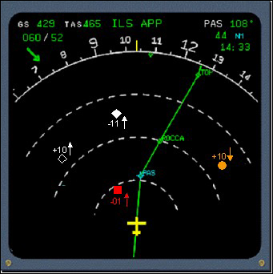
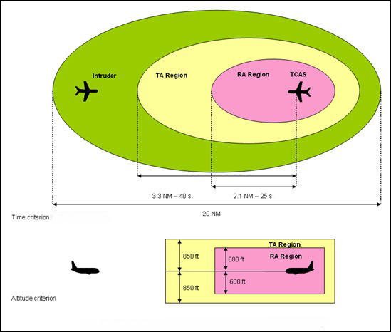
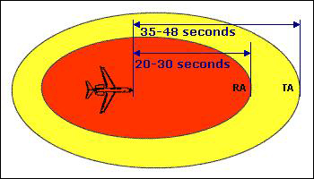
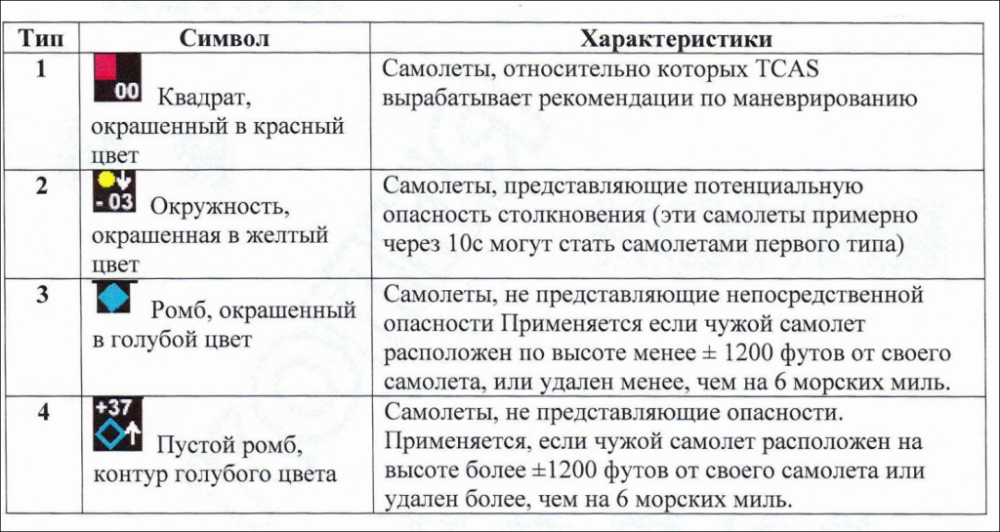
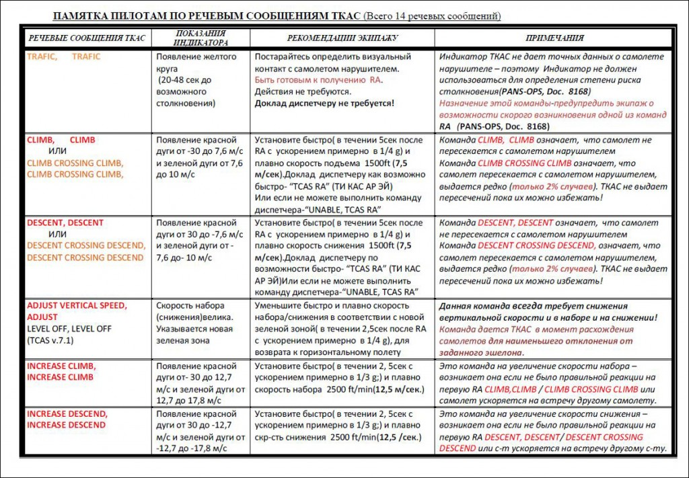
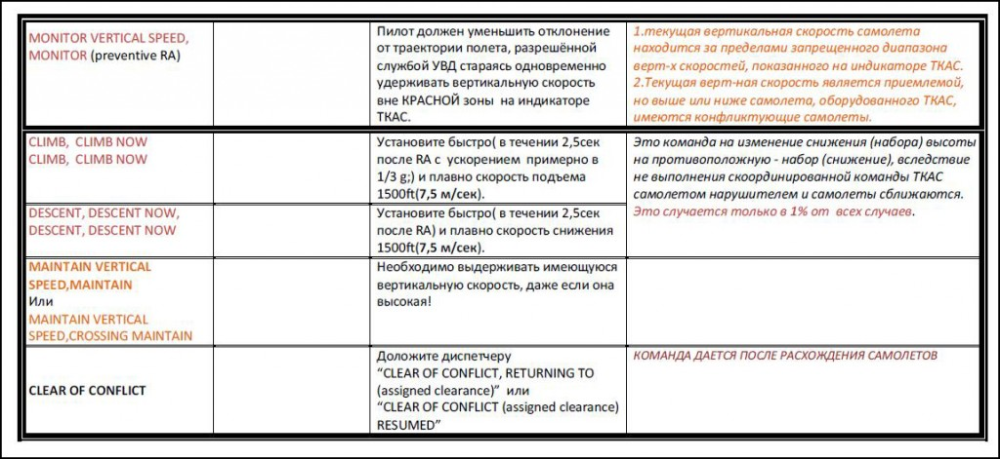

Система предупреждения столкновения самолётов в воздухе (TCAS) — система самолёта, предназначенная для уменьшения риска столкновения воздушных судов.
Дисплей–индикатор выдает информацию о перемещении близколетящих самолетов, а также визуальные команды для предотвращения столкновений
у TCAS нет собственного приемопередатчика и при работе система использует так называемые приемоответчики системы управления воздушным движением
режим А — Каждому воздушному судну Службой Управления Движением присваивается свой четырехзначный цифровой идентификационный код (squawk code).Если код не выдан диспетчером, то используется один из существующих стандартных, например 1200 — код полета по США или 7000 — код полета по Европе.
В режиме А в ответном сигнале транспондера закодирован только сквок. То есть самолет идентифицируется, отметка на экране локатора есть, но никаких других данных (в том числе и о высоте полета) нет.
Режим С. вместе с кодом в сигнале присутствует информация о высоте полета. Транспондеры, использующие режим А+С, называют RBS или ATC RBS. Такие приемоответчики в США, например, обязательны при полетах выше 3000 м (10000 футов) и в радиусе 30 миль вокруг больших аэроузлов (аэропортов).
Режим S. Транспондер, работающий в этом режиме отвечает избирательно, когда запрашивают именно его, тогда как работающие в режиме А/С отвечают на любой сигнал облучения локатором. Это позволяет снизить общее засорение эфира ответами транспондеров.
Кроме того в выдаваемом ответе на режиме S содержится дополнительная информация, такая как скорость, высота, бортовой номер (позывной) и могут быть также GPS-координаты.
TCAS может осуществлять наблюдение за самолетами как в режиме работы транспондеров С, так и в режиме S. Приемопередатчики, работающие в режиме S ежесекундно излучают самогенерируемые сигналы, так называемые сквиттеры. В этом сигнале содержится адрес отправителя. По его данным ТКАС адресно отправляет запрос и по полученному ответу определяет дальность, курсовой угол (азимут) и высоту контролируемого самолета.
Защищаемые зоны по расстоянию, высоте и времени.
Выдаваемые команды можно разделить на консультативные, их обозначают ТА (Traffic Advisory) и команды для непосредственных немедленных действий по предотвращению столкновения RA (Resolution Advisory).
Для решения проблемы предотвращения столкновения введено понятие точки наибольшего сближения СРА (Closest Point of Approach).
Для зоны ТА – 35-48 сек., для зоны RA – 20-30 cек. То есть экипаж вне зависимости от скоростей сближения с самолетом-нарушителем всегда имеет определенный запас времени для осуществления необходимых действий.
Время достижения точки СРА.
Визуально команды ТА и RA отображаются на индикаторе следующим образом:
Также при выдаче команды RA на указателе вертикальной скорости секторы шкалы окрашиваются в разные цвета. Красный цвет означает, что в этой зоне находиться нельзя, иначе неминуемо произойдет столкновение. Зеленый цвет обозначает рекомендуемые значения вертикальной скорости для гарантированного предотвращения столкновения.

Звуковые команды RA можно разделить на корректирующие и предупредительные. Первые предписывают пилоту немедленно изменить траекторию движения в вертикальной плоскости для предотвращения столкновения.
Вторые выдают рекомендации пилоту по выдерживанию, либо же неиспользованию определенных вертикальных скоростей.
